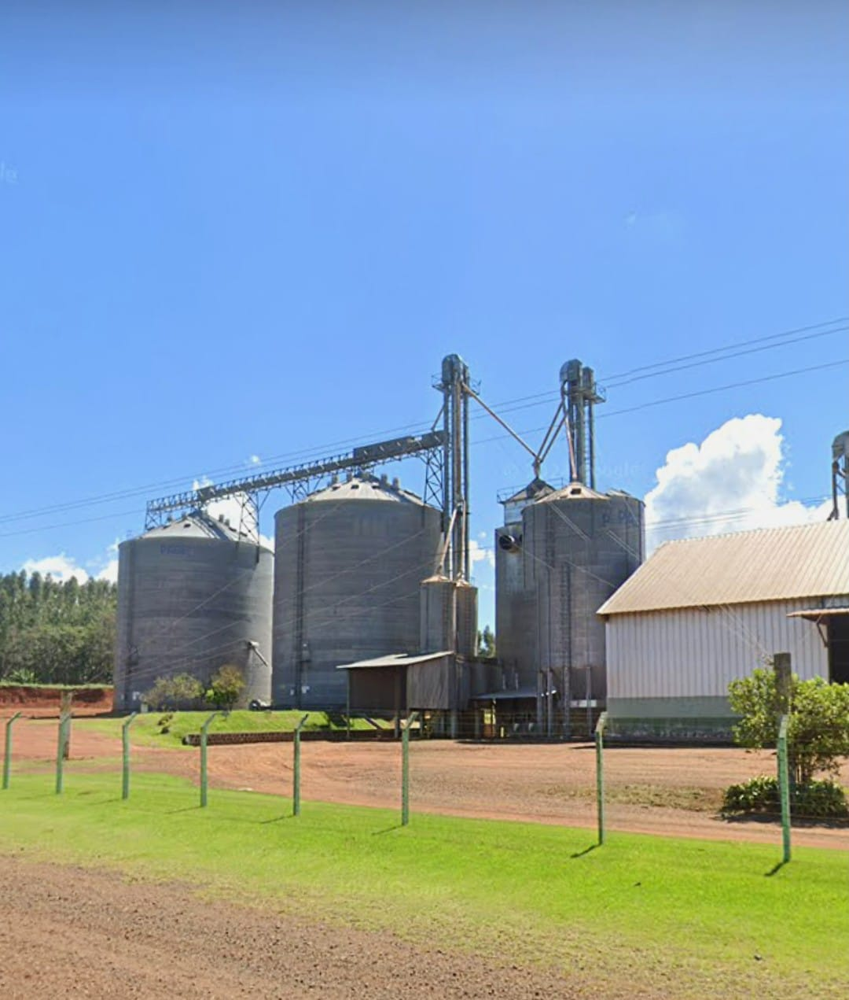
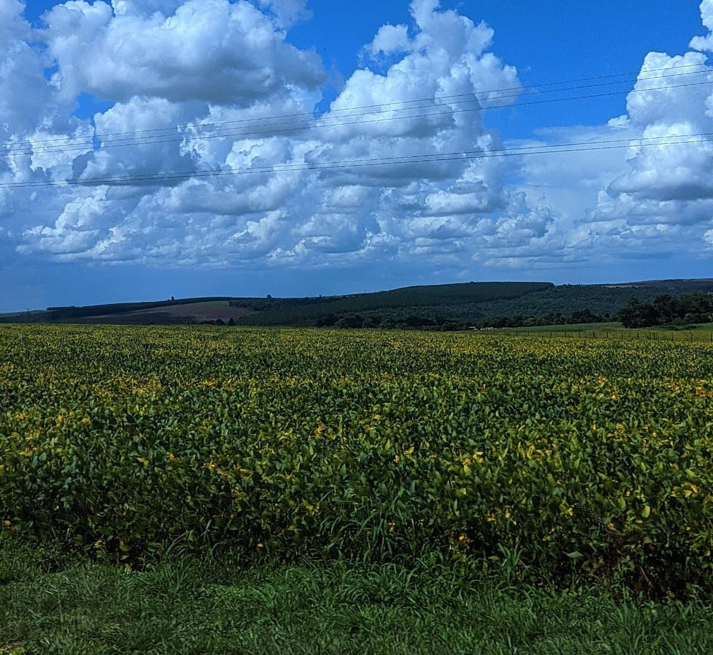
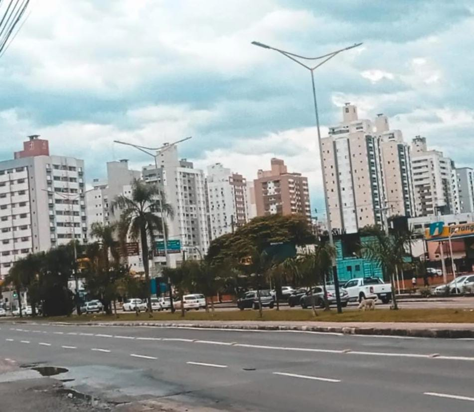

Produção e Industrialização: O Futuro do Agronegócio
A Sinfonia da Produção: Campo e Cidade em Harmonia
No Campo: Da Lavoura à Transformação Inicial

Na Cidade: A Industrialização em Grande Escala e Distribuição

A Sinfonia da Produção: Campo e Cidade em Harmonia
🌱 O Campo: Origem e Transformação Inicial
🏭 A Cidade: Processamento e Desenvolvimento
🤝 A Conexão: Um Ciclo de Crescimento Contínuo 🚀
Entre em Contato Conosco 📧
Envie suas dúvidas, sugestões ou feedback. Sua opinião é importante! 📝